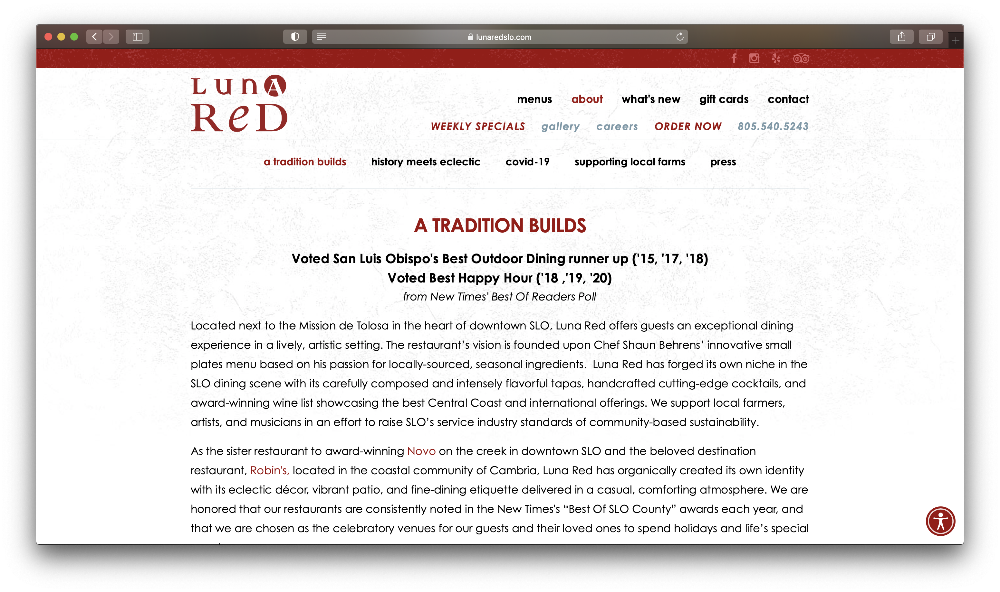
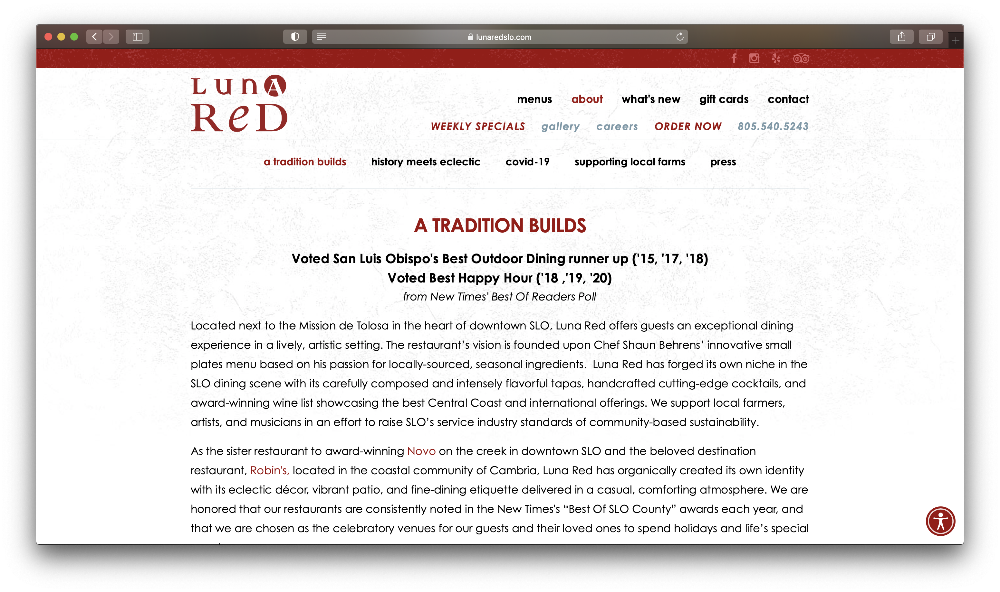
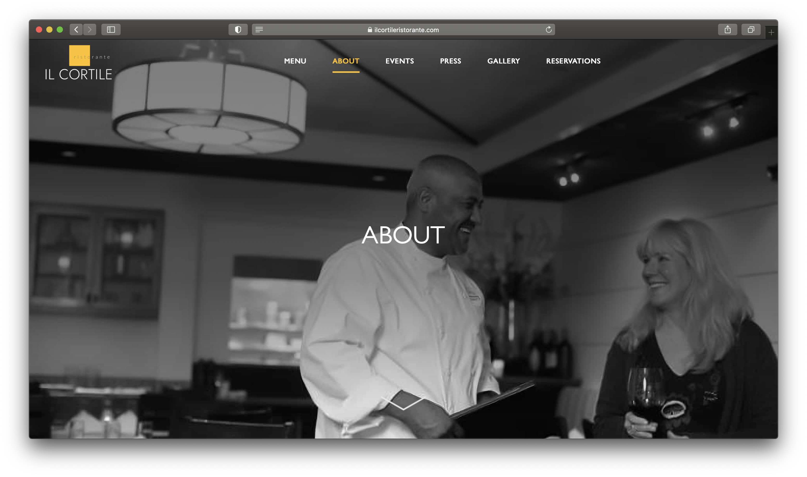
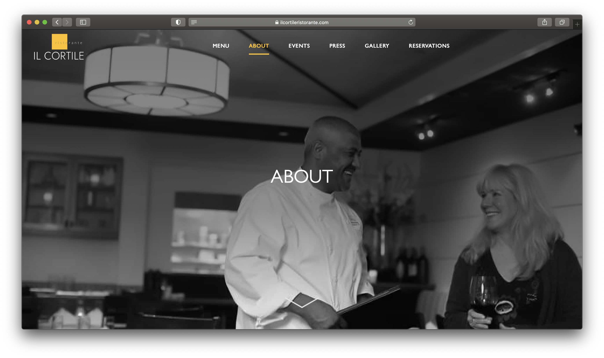

Final project proposal
Introduction
Rix
Rix is a neighborhood restaurant, featuring a local rotating menu & wine list, highlighting the finest produce and artisan products.
Target audience
The people who use this site are people who want to have a good dining experience with friends and family.
People would use the site to see the hours, address, and online reservations, menu, online order to-go. Especially during covid, people will mostly go on restaurant websites to check out their menu to order online.
Comparative analysis
Luna Red
 

Novo Restaurant and Lounge


Il Cortile
 

Website content
Home
Rix is a neighborhood restaurant, featuring a local rotating menu & wine list, highlighting the finest produce and artisan products.
[Inside of the restaurant.]
Menu
[Platter spread.]
Brunch
-
pecan cinnamon roll
with salted caramel
10
-
prosciutto toast
rusticana toast, prosciutto de parma, 8-minute egg, honey black pepper ricotta, avocado, serrano chile, blackberry, saba, pepita
20
-
salmon scramble
wild salmon, artichoke, swiss chard, pecorino scrambled eggs, endive, green bean, baby cauliflower salad with lemon vinaigrette, fine herb schmear, filone toast
19
-
portobello benedict
portobello mushroom, poached eggs, tomato, avocado, spinach, roasted fingerling potatoes, fresh hollandaise
22
-
ahi tuna sandwich
tomatoes provencales, aioli, tomato pesto, greens on toasted levain
22
-
lemon ricotta raviolis
caramelized leeks, wilted arugula, white wine, aged parmesan
19
-
salade marius
spinach, walnuts, gorgonzola cheese, roasted bosc pear, balsamic vinaigrette
18
Dinner
-
keep clam and pasta on
bucatini pasta, littleneck clams, mussels, bacon, corn, cremini mushroom, chili, white wine, poached garlic, pecorino, bread crumbs
28
-
almond palmer chicken
honey almond roasted roasted half chicken, tea melted leeks, pearl onions, jasmine soubise, lemony spring vegetables
32
-
miso halibut
miso maple soy glazed alaskan halibut, edamame scallion avocado smash, soba noodles, carrot, snap peas, radish, aromatic herbs, thai pickles, cayenne spiced peanuts, sesame soy vinaigrette
32
-
double cut pork chop
chamomile brined double cut pork chop, black beluga lentil, radish and sunflower sprouts salad, whipped labne, strawberry chile chutney
35
-
a-maize-ing pasta
bucatini, bacon, corn, cremini mushroom, leeks and greens, chili, white wine, poached garlic, pecorino, house ricotta, bread crumbs
25
-
pesce misto
salmon, calamari, sole, prawns, scallops, lemon olive oil sauce, yukon gold potato, sauteed broccoli
32
-
conchiglie
free range chicken, broccoli, sundried tomato, sherry wine
26
-
go fish
seared scallion mustard ahi tuna burger, charred jalapeño aioli, watercress, cilantro, cucumber and radish pickle, toasted brioche bun, fries
22
-
ketofornia steak
marinated flank steak, snow peas, cremini mushroom, sautéed zucchini, marcona almond cauliflower rice, aromatic herbs, house kimchi, hot and sour glaze
20
-
ribeye burger
all-natural beef burger, melted onions, aioli, lettuce, tomato, pickled onion, house fries
16
About Us
Here at Rix, we aim to provide you with the best dining experience in a comfortable, casual and exciting environment. This resulted in wanting a place to share the best times with family and friends while being welcomed by the hospitality you’d come to expect from a fine eatery. We put a lot of great thought & pride into building a space where our guests would feel great to be a part of. We value the importance of knowing the source of our food and trust the ingredients we cook, serve and eat. Products that are raised and harvested locally, in a sustainable manner, will not only taste better, but will also be better for our environment, our health and our future.
[Workers smiling.]
Contact & Hours
Please feel free to send us a message for any questions you may have.
Email: info@rix.com
[Map of location.]
Hours
Sunday – Thursday: 11:00 am – 9:00 pm
Friday – Saturday: 11:00 am – 9:30 pm
Happy Hour: Tuesday – Friday 2:00 pm – 5:00 pm